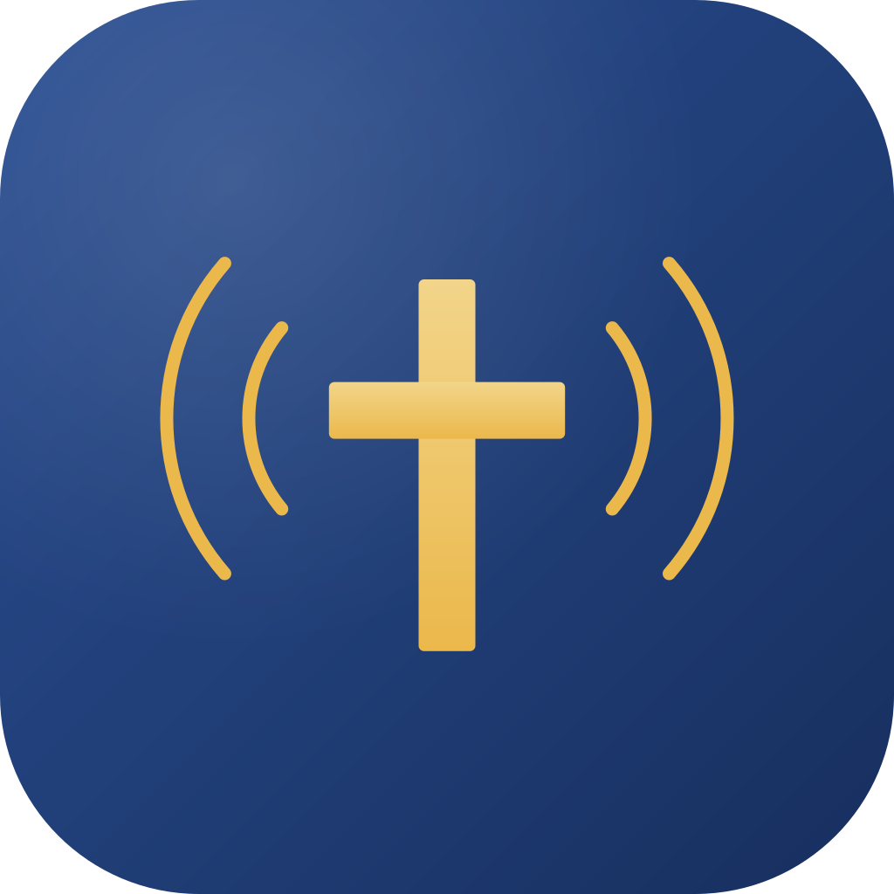

Beta · gratisSundayRec
Sett tidsplanen én gang. Hver søndag tar SundayRec opp gudstjenesten, transkriberer talen, strømmer den live og publiserer den til podkasten — helt av seg selv. Gratis skrivebordsapp for Mac og Windows. Ingen abonnement, ingen sky-relé. Filene dine blir dine.
Hele søndagen, fra opptak til publisert
Én app som dekker kjeden mange menigheter i dag løser med fem ulike verktøy.
Planlagt opptak
Legg inn gudstjenestetidene, så starter og stopper opptaket automatisk — selv om maskinen sover.
Live-strømming
Send direkte til YouTube, Facebook og flere samtidig over RTMP — med overlays og lower-thirds.
AI-transkripsjon
Lokal tale-til-tekst transkriberer prekenen på din egen maskin — ingenting lastes opp.
Innebygd editor
Klipp, juster og masterer lyden med profesjonell loudness-normalisering før publisering.
NDI-mottaker
Ta opp rett fra ProPresenter, OBS eller Keynote over nettverket — uten ekstra capture-kort.
Podkast-publisering
Last opp til YouTube og publiser til podkast-RSS med review-før-publisering, i én flyt.
Lokalt først. Filene dine forlater aldri maskinen — med mindre du ber om det.
SundayRec er en skrivebordsapp, ikke en skytjeneste. Opptak, redigering og transkripsjon skjer på din egen maskin. Velger du sky-backup til Google Drive eller publisering til en podkast-host, er det appen som laster opp på dine vegne — forholdet til tjenesten er ditt.
- Ingen analyse, ingen telemetri
- Over 1000 automatiske tester i ryggen
- Sju språk, inkludert bokmål og nynorsk
Spiller sammen med resten av Sunday Suite
Status: beta
SundayRec er den modne kjernen i suiten og kan lastes ned og brukes gratis i dag, men er fortsatt i beta. Test gjerne de første opptakene før du stoler på den til en kritisk gudstjeneste. Denne siden på sundaysuite.app er hjemmebasen til SundayRec — det finnes ingen egen nettside å besøke; nedlasting kommer rett fra GitHub.
Klar til å ta opp neste søndag?
Last ned SundayRec gratis for Mac og Windows — ingen konto nødvendig — eller ta kontakt om du vil følge utviklingen.